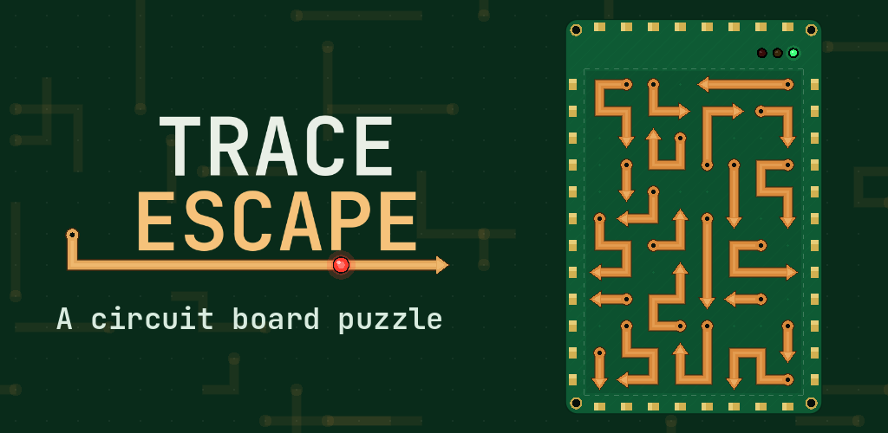
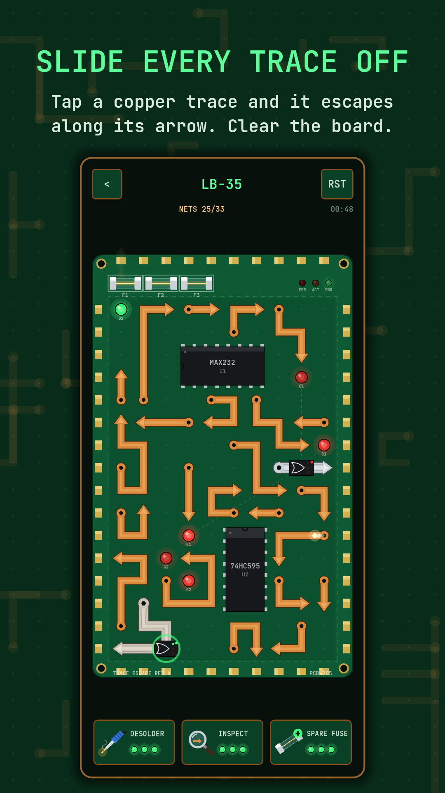
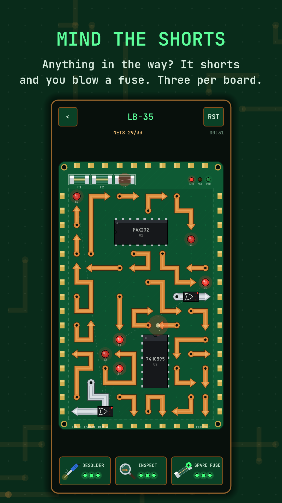
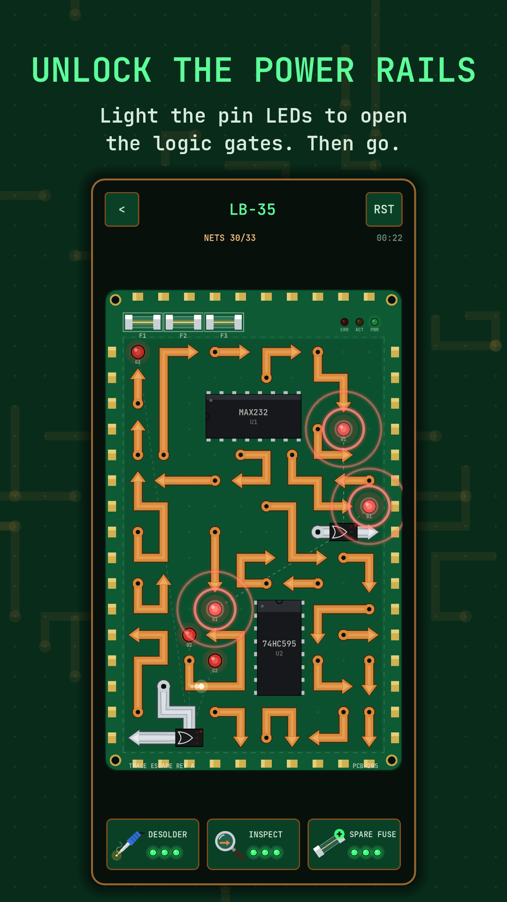
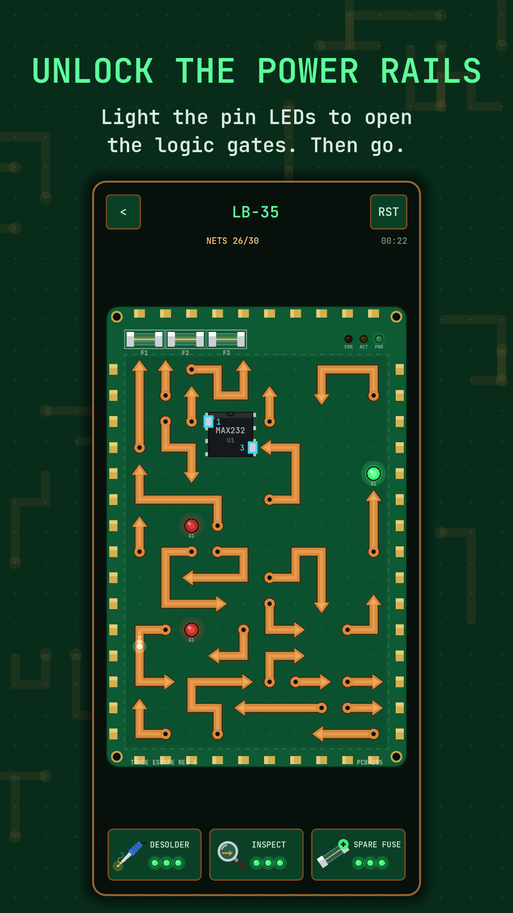
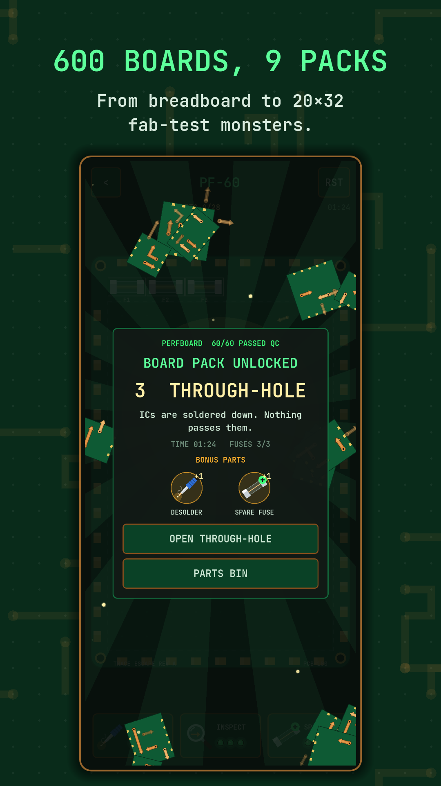
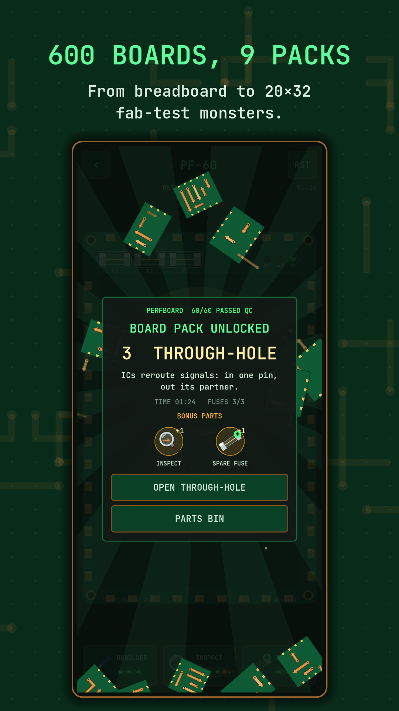

Trace Escape

Every board is a circuit, and every copper trace has an arrow. Tap a trace and it slides off the board along its arrow, but only if nothing is in the way. Work out the right order and clear the whole board to pass QC.






How it works
- Tap a trace to send it sliding off the board in the direction of its arrow.
- If anything is in its path, it shorts and you blow a fuse. You have three fuses per board.
- Plan ahead: clearing one trace opens the way for the next.
New components arrive as you go. ICs never move and block everything. Logic gates lock silver power rails until their pin LEDs light up. Capacitors charge as traces leave the board. Diodes only conduct one way, until a trace overloads them.
600 boards in nine packs
From a tiny breadboard to giant fab-test boards you pinch to zoom. Finish a pack to unlock the next, with a fanfare and bonus boosters.
| Pack | Boards | New component |
|---|---|---|
| Breadboard | 1–40 | Copper traces |
| Perfboard | 41–100 | Longer, twistier traces |
| Through-Hole | 101–170 | ICs |
| Logic Board | 171–240 | OR gates |
| Interlock | 241–310 | AND gates |
| Power Supply | 311–380 | Capacitors |
| Rectifier | 381–450 | Diodes |
| Mainboard | 451–530 | Majority (k-of-n) gates |
| Fab Test | 531–600 | Everything, up to 20×32 |
Daily Build and Free Play
A new board every day, the same for every player, harder as the week goes on, so keep your streak going. Or jump into Free Play for endless fresh boards at Easy, Medium, Hard or Expert.
Boosters for tight spots
Desolder lifts any trace straight off the board, Inspect finds a trace that can safely leave right now, and a Spare Fuse replaces a blown fuse or revives a fried board. Boosters recharge over time, and you can watch an optional ad to get one back sooner.
A living circuit board
- Current pulses along the traces, and status LEDs blink and breathe
- Solder smokes, fuses blow and diodes pop
- Relaxed background music while you think
Ads
The game is free to play, with a banner ad and an occasional ad between boards. A one-time Remove Ads purchase in Config removes them for good and makes boosters recharge faster. Ads that give a booster back only play when you choose to watch one.
Support
Questions, feedback or bug reports: baylandblue@gmail.com